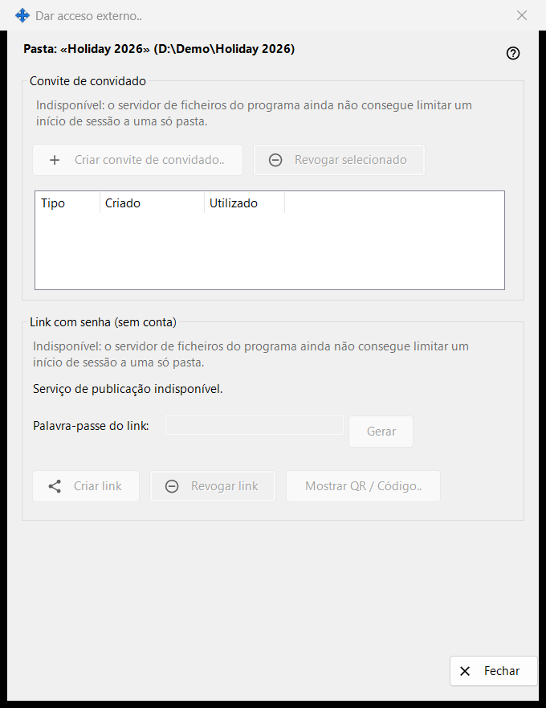
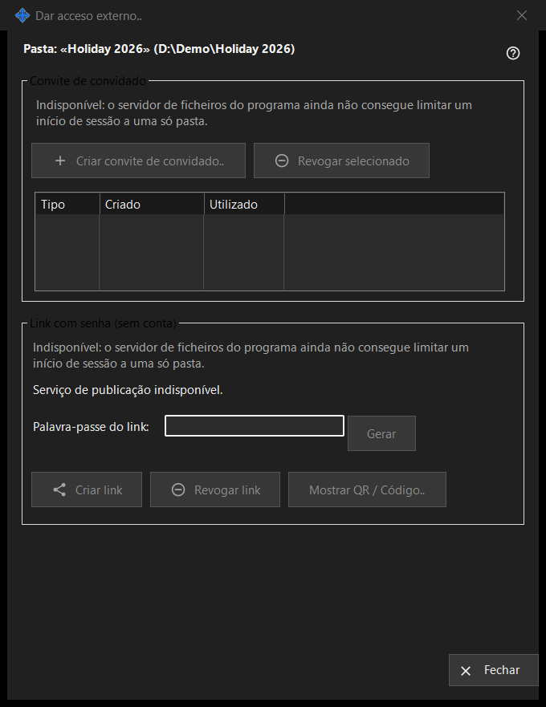

Dar acesso externo
Finalidade
Controla o acesso a uma pasta compartilhada para pessoas fora dos seus próprios dispositivos: um convite de convidado ou um link com senha que não precisa de conta. Ela se abre a partir do botão «Dar acesso externo..» da janela principal do Share Manager para a pasta selecionada. Nesta versão, os controles que criam novo acesso estão desativados e a janela mostra o motivo, enquanto o acesso já existente ainda pode ser retirado.


Nesta ordem
- Leia a linha de cabeçalho com o nome e o caminho da pasta.
- Em cada grupo, leia a linha do motivo; enquanto for mostrada, não é possível criar nada de novo.
- Para remover um acesso, selecione um convite e clique em «Revogar selecionado», ou clique em «Revogar link».
- Clique em «Fechar» (Esc) para sair.
Os elementos
Pasta e estado
A linha em negrito indica a pasta e o seu caminho. A linha de estado abaixo indica o último resultado. Quando o serviço de publicação não está em execução, a janela diz «Serviço de publicação indisponível.» e os seus botões ficam desativados.
Convite de convidado
O grupo tem «Criar convite de convidado..», «Revogar selecionado» e uma lista com Tipo, Criado e Usado para os convites de convidado desta pasta. Revogar remove o convite; a pasta e os seus arquivos não são apagados.
Link com senha (sem conta)
O estado diz «Link não criado.» ou «O link está ativo.» A caixa «Senha do link:» está mascarada e «Gerar» a preenche. «Criar link» passa a «Atualizar link» enquanto houver um link ativo. «Revogar link» pergunta primeiro, porque todas as sessões ativas no link terminam. «Mostrar QR / Código..» mostra o link como um código.
Por que a criação está desativada
Cada grupo mostra uma linha com o motivo: o servidor de arquivos do programa não consegue limitar um login a uma só pasta. Enquanto ela for mostrada, todos os controles que criam convites ou links ficam desativados. Retirar o acesso existente depende apenas do que existe.
Configurações do gerenciador · Configurações de compartilhamento SFTP · Configurações do servidor de troca